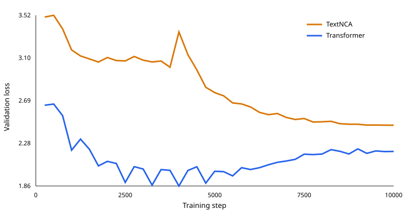
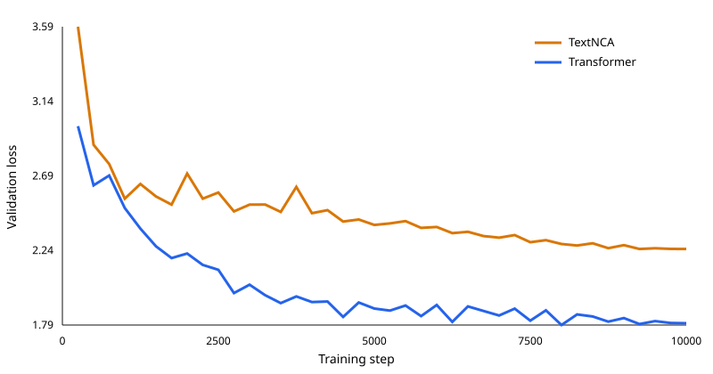

Final decision
Stop TextNCAPreserve it as a negative resultV2 test loss
1.813 vs 2.258Transformer vs TextNCATraining speed
3.30× fasterTransformer end-to-endUnique outputs
100% vs 50%Transformer vs TextNCAResearch question
Can iterative local updates compete with a Transformer on structured dramatic dialogue?
We implemented the primary TextNCA architecture with local-attention windows [8, 32, 128] and compared it with a conventional Transformer under the same byte vocabulary, context length, optimizer, seed, batch size, data stream, and training budget. Parameter counts differed by only 0.643%.
The experiment was not designed to produce a commercial chatbot. It was designed to find out whether this architecture deserved another round of investment.
Every stage
From corpus design to stopping rule
- 01
Corpus V1
19 public-domain plays, 36 scenes, and 7,416 turns. Complete works were isolated by split.
- 02
Locked V1 comparison
The 27,353,920-parameter TextNCA and 27,179,200-parameter Transformer each trained for 10,000 steps. The Transformer won on loss and speed; TextNCA collapsed across prompts.
- 03
Corpus V2
Expanded to 30 works, 75 scenes, and 14,797 turns—97.1% more tokens—with author and coauthor isolation.
- 04
Locked V2 comparison
Architecture and training settings stayed fixed. Only the frozen corpus and run destinations changed.
- 05
Generation-quality probes
Early, middle, and late held-out boundaries measured repetition, exact diversity, cross-prompt collapse, grammar state, speaker formatting, and held-out speaker identity.
- 06
Stop decision
TextNCA lost on held-out loss and speed and showed no advantage on output diversity or prompt sensitivity. Further TextNCA training was stopped.
Provenance and locked protocol
Every stage is tied to a run, revision, corpus hash, and checked-in configuration.
The corpus contains 30 works parsed from 10 hash-pinned Project Gutenberg source files. Every source records retrieval date, byte count, SHA-256, United States public-domain basis, parser, and split assignment. Raw source text and checkpoints are not published.
Commit 7e4ecad7071f2ac4ea2bb99c520aac7291333713
Corpus 7fcb04f62766b4e7ef91fc49ce803a59e78dfcf56eb8a6e61c1c884ac7e98970
27,353,920 / 27,179,200 parameters
10,000 steps · seed 123
Commit d8cbe61523f2627cb786ab1d7d19d0fbc04e5a19
Corpus d2126f5d958e3190a708f7a502259196d8d9971df4935e33e53c388e1ee9a7c5
27,353,920 / 27,179,200 parameters
10,000 steps · seed 123
Results
More data helped both models. It helped the Transformer much more.
V119 works

| Metric | TextNCA | Transformer |
|---|---|---|
| Test loss ↓ | 2.497 | 2.309 |
| Training time ↓ | 58.2 min | 17.7 min |
| Test throughput ↑ | 19,717 tok/s | 78,008 tok/s |
| Unique continuations ↑ | 55.6% | 100.0% |
| Cross-work similarity ↓ | 0.890 | 0.187 |
| Token repeated trigrams ↓ | 20.0% | 19.4% |
| Character repeated trigrams ↓ | 14.0% | 8.1% |
| Allowed held-out speaker ↑ | 0.0% | 0.0% |
V230 works

| Metric | TextNCA | Transformer |
|---|---|---|
| Test loss ↓ | 2.258 | 1.813 |
| Training time ↓ | 69.5 min | 21.1 min |
| Test throughput ↑ | 21,197 tok/s | 76,943 tok/s |
| Unique continuations ↑ | 50.0% | 100.0% |
| Cross-work similarity ↓ | 0.737 | 0.215 |
| Token repeated trigrams ↓ | 17.8% | 19.2% |
| Character repeated trigrams ↓ | 0.0% | 5.3% |
| Prefix-valid continuation ↑ | 91.7% | 66.7% |
| Allowed held-out speaker ↑ | 0.0% | 0.0% |
The widening gap matters.
From V1 to V2, TextNCA test loss improved 9.5%. Transformer test loss improved 21.5%.
Representative output
The metrics are clearer when you see the text.
These are predeclared early-boundary samples, not hand-picked successes or failures. Both models still generate poor dialogue. TextNCA's repeated shape across unrelated plays is the important failure.
TextNCA · V2Beyond the Horizon
<TURN><SPEAKER>MADON<TEXT>Dit'sel to list! The no stome..<TURN_END><TURN><SPEAKER>WISSEL<DIRECTION>Hel lomice._<ITEM_END><TEXT>I’s as it, you if nok sang noo your ast is a theny you ou mand thewird eifthe ow in alout. I t I you you arangh t you thit. We neveencks, cutherer ay hit whis feand if a foooule-t ma to Muse
Transformer · V2Beyond the Horizon
<TURN><SPEAKER>MADGO<TEXT>Didn’t you’ve got the laugh, sir.... in all two give. I said things.<TURN_END><TURN><SPEAKER>STER<DIRECTION>She scared the rightently.<ITEM_END><DIRECTION>Droposed is her her eyes after and chair rights thround at a moment, to reman age comples are of the bright fears and the out of man the co
Neither V2 model generated a correct held-out speaker in these probes, and neither completed a full serialized work. The Transformer is the stronger research baseline, not a production-ready dialogue model.
Conclusion
The experiment succeeded by telling us to stop.
TextNCA is not worth another training round in this project. It was 3.30× slower to train, had 24.6% higher V2 test loss, produced only 50% unique continuations, and retained 0.737 cross-work character-trigram similarity.
If convincing stage dialogue remains the goal, the next rational experiment is fine-tuning a capable pretrained language model—not V3 of this TextNCA.
Limitations
What this result does—and does not—say
- One training seed and one generation seed.
- English-language public-domain drama only.
- Near-parameter matching, not exact matching.
- No architecture or optimizer ablations.
- Generation probes are descriptive, not human-preference evaluations.
- This rejects this implementation and scale; it does not prove every neural cellular automaton is inferior.
Evidence
Committed artifacts, not reconstructed claims
V1 evidenceSanitized metrics, protocol, hashesV2 evidenceFinal metrics and decision ruleCorpus V2Scale, rationale, limitationsLocked configsAll four model/training configsEdit the draftSource, issues, and revision history
Metric definitions: repeated-trigram rates measure within-sample repetition; exact unique-continuation rate measures duplicate outputs; cross-work character-trigram Jaccard measures similarity between prompts from different held-out plays. Lower repetition and cross-work similarity are better; higher uniqueness is better.
V2 training commit d8cbe61523f2627cb786ab1d7d19d0fbc04e5a19
Corpus SHA-256 d2126f5d958e3190a708f7a502259196d8d9971df4935e33e53c388e1ee9a7c5